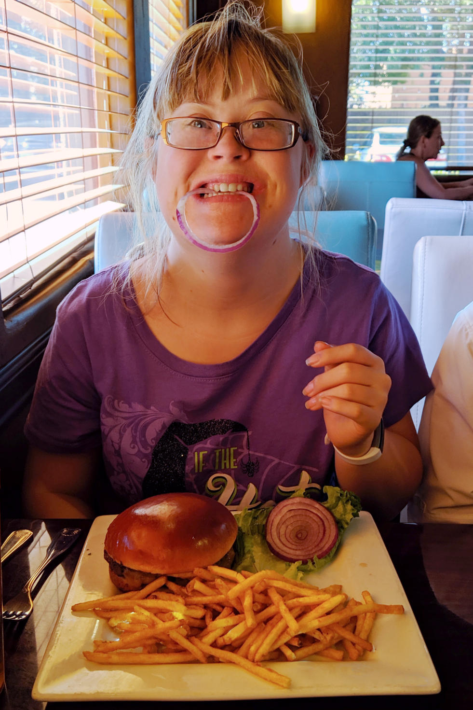

Photo editing

I edit client and family photos from time to time. This typically involves:
- Color correction
- Highlights removal on glasses
- Teeth whitening
- Eye brightening
- Correcting my sister's lazy eye
- Adding digital makeup while Mom looks over my shoulder and says "more"
- Spot removal
You may be wondering, "Is her sister really eating raw onion in that photo?" The answer is yes. Yes, she ate the whole thing. Yes, her breath was AWFUL after that.